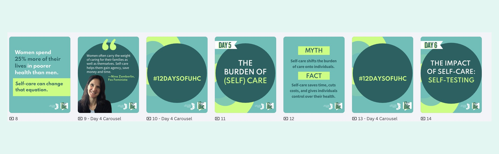
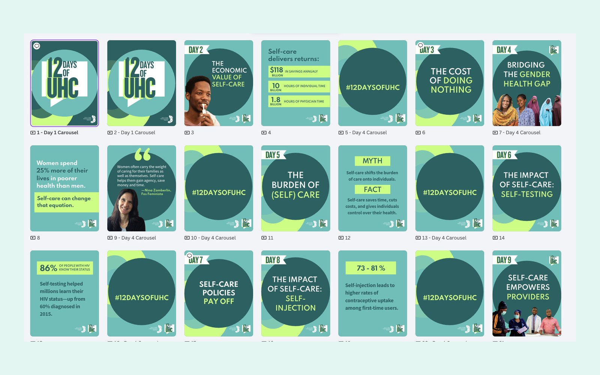

The challenge
An end-of-year push making the case for universal health coverage and the role of self-care within it. The content was dense — health economics, policy, gender equity, clinical evidence — and the audience was scrolling. One long argument would not be read. One hero post would not hold.
The idea
A countdown. 12 Days of UHC gave the campaign a shape people already recognize, a reason to come back, and a content calendar built into the concept. Each day took one argument and made it alone: the economic value of self-care, the cost of doing nothing, the gender health gap, the burden of care, self-testing, self-injection, policy, providers.
The system
Twelve days of daily posting only ships if production is systematic. I built five repeatable card types and the campaign ran on recombining them: day cards that open each day, stat cards where the number does the work, myth-and-fact cards for the arguments that needed correcting rather than explaining, quote cards for partner voices, and hashtag cards that close each carousel and give the campaign its beat.

The circle motif carries through all of them, so a card read in isolation still reads as one of the twelve. Day cards are flagged and numbered, so the countdown is legible at a glance in a feed.

Why it holds
The structural decision came before the visual one. Once the card types existed, the next day's post could be built correctly by someone who was not me — the same instinct behind every brand system I build.